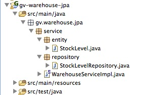
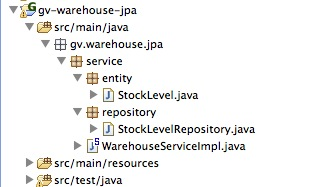

Added Product

In this post I will discuss the api in a bit more detail, and then talk about the implementation of the core services.
My objectives in implementing the core logic were to use Spring Data JPA for persistence, and build a minimal web front-end (using Spring MVC) to provide a basic implementation meeting the requirements. This would be enough to provide a system which could be extended using Spring Integration to talk to a variety of different implementations of the WarehouseService.
Before we get started, you will need to download the project and setup your environment. Make sure you have all of the following installed:
gv-parent/
gv-api/
gv-core/
gv-warehouse-gemfire/
gv-warehouse-jpa/
gv-warehouse-node/
gv-web/
gv-web-standalone/
In this post we will be discussing the gv-api, gv-core and gv-warehouse-jpa and gv-web-standalone projects.
The project gv-web-standalone uses an in-memory H2 database and should run in any web container. If you have imported the projects into STS, you can run it simply by right-clicking on the project root and selecting Run As/Run On Server.
To generate a WAR file which can be deployed in e.g. Tomcat, use the gradle war command from the project root
directory (my source code is installed at /home/duncan/src), and copy the generated WAR to your tomcat webapps directory:
cd /home/duncan/src/global-vendor gradle war cp gv-web-standalone/build/libs/gv-web-standalone-1.0.0.CI-SNAPSHOT.war $TOMCAT_DIR/webapps/gv-web-standalone.warOnce it is running open a browser and navigate to the admin page http://localhost:8080/gv-web-standalone/admin.html.
You can see that the screen is divided into three sections:
To start, let's add a couple of warehouses, London and Paris
Now add a product
Now you can open another browser window as a distributor and see the list of products and their stock levels. Go to the distributor page http://localhost:8080/gv-web-standalone/index.html.

Go back to the admin page and click on 'Set Stock Levels', enter 33 for London and 55 for Paris, then save:
If you go back to the distributor page and click refresh, you should now see the total stock:
Click on the Purchase link and get ready to buy 44:

Click 'Purchase' and the order confirmation page will show you where your fish will be shipped from:

If you go back to the admin page you should see the stock levels now are London 33, and Paris 11.
Now make another purchase of 22 and you should see that the order will be fulfilled from London. This is because the OrderService always takes stock from the warehouse with the most first.
Finally, make a purchase of 15 and you should see 11 shipped from London and 4 from Paris.
Congratulations! Now, let's move on to a discussion of the parts of the system which use the three technologies I wanted to introduce in this post: Spring Data JPA, Spring MVC and Spring Integration.
If you want a more detailed discussion of the code, you can find it here.
Most Java developers are used to using an ORM like Hibernate to take care of persistence. Using the JPA annotations makes it easy to indicate to the persistence provider which fields to persist, and what relationships to manage. Even with all this help, there is often a need to write custom queries in a DAO class, and these queries are often quite simple - e.g. getWidgetByNameAndWidth().
The Spring Data Project is an umbrella project which makes it easy for developers to use a variety of different data-access technologies. The Spring Data JPA sub-project provides an easy and powerful way to implement common query and pagination logic, and means that for many use-cases you no longer have to write any code. Let's take a look at how I've used it in this project.
I needed to persist four types of data:
 

Using Spring Data JPA is easy. First, include the dependencies in your project. I use Gradle, so the relevant lines are:
// Spring-core for the Spring container and core support
compile group: 'org.springframework', name: 'spring-core', version:'3.2.0.RELEASE'
// Spring-context for automatic configuration using <context:component-scan....
compile group: 'org.springframework', name: 'spring-context', version:'3.2.0.RELEASE'
// Spring support for ORM frameworks. Needed to allow Spring to work with Hibernate
compile group: 'org.springframework', name: 'spring-orm', version:'3.2.0.RELEASE'
// Transaction support
compile group: 'org.springframework', name: 'spring-tx', version:'3.2.0.RELEASE'
// Allows Spring to generate DAOs based on the JPA entity annotations
compile group: 'org.springframework.data', name: 'spring-data-jpa', version:'1.3.0.RELEASE'
// Hibernate is the JPA persistence provider
compile group: 'org.hibernate.javax.persistence', name: 'hibernate-jpa-2.0-api', version:'1.0.0.Final'
compile group: 'org.hibernate', name: 'hibernate-entitymanager', version:'4.1.4.Final'
compile( group: 'org.springframework', name: 'spring-aspects', version:'3.2.0.RELEASE' ) {
exclude( module: 'aspectjweaver')
}
compile group: 'org.slf4j', name: 'slf4j-log4j12', version:'1.6.6'
compile group: 'org.aspectj', name: 'aspectjweaver', version:'1.6.12'
compile group: 'cglib', name: 'cglib', version:'2.2.2'
compile group: 'com.google.guava', name: 'guava', version:'14.0.1'
compile group: 'joda-time', name: 'joda-time', version:'2.1'
runtime group: 'org.hsqldb', name: 'hsqldb', version:'2.2.8'
Next, write your entity class and annotate with JPA:
package gv.products.service.entity;
import javax.persistence.Entity;
import javax.persistence.GeneratedValue;
import javax.persistence.Id;
import javax.persistence.Table;
@Entity
@Table(name="products")
public class ProductEntity {
@Id
@GeneratedValue
private Long id;
private String name;
private String description;
public Long getId() {
return id;
}
public void setId(Long id) {
this.id = id;
}
public String getName() {
return name;
}
public void setName(String name) {
this.name = name;
}
public String getDescription() {
return description;
}
public void setDescription(String description) {
this.description = description;
}
}
Now, write your repository:
package gv.products.service.repository;
import gv.products.service.entity.ProductEntity;
import org.springframework.data.repository.CrudRepository;
public interface ProductRepository extends CrudRepository<ProductEntity, Long> {
}
Inject the repository into a service and use it. Notice how the repository comes with a number of methods for dealing with entities so you dont; have to write them: save(), findOne(), findAll() ... etc.
@Service("productService")
@Transactional
public class ProductServiceImpl implements ProductService {
@Autowired
private final ProductRepository repository;
public ProductServiceImpl() {
this(null);
}
public ProductServiceImpl(ProductRepository repository) {
this.repository = repository;
}
@Override
public void saveProduct(Product product) {
ProductEntity e = toEntity(product);
repository.save(e);
product.setId(e.getId());
}
@Override
public Product getProductById(Long productId) {
ProductEntity e = repository.findOne(productId);
if(e == null) {
return null;
}
return toDto(e);
}
...
...
...
That's it. Spring will detect all your repositories for you, create real implementations and inject
them into any component which requires them. You just need to enable it in your application context.
For example, here is the ProductServiceImplTest-context.xml:
<?xml version="1.0" encoding="UTF-8"?>
<beans xmlns="http://www.springframework.org/schema/beans"
xmlns:xsi="http://www.w3.org/2001/XMLSchema-instance" xmlns:context="http://www.springframework.org/schema/context"
xmlns:jdbc="http://www.springframework.org/schema/jdbc" xmlns:tx="http://www.springframework.org/schema/tx"
xmlns:jpa="http://www.springframework.org/schema/data/jpa"
xsi:schemaLocation="http://www.springframework.org/schema/jdbc http://www.springframework.org/schema/jdbc/spring-jdbc-3.0.xsd
http://www.springframework.org/schema/beans http://www.springframework.org/schema/beans/spring-beans-3.0.xsd
http://www.springframework.org/schema/tx http://www.springframework.org/schema/tx/spring-tx-3.0.xsd
http://www.springframework.org/schema/context http://www.springframework.org/schema/context/spring-context-3.0.xsd
http://www.springframework.org/schema/data/jpa http://www.springframework.org/schema/data/jpa/spring-jpa.xsd">
<!-- Use an in-memory database for testing -->
<jdbc:embedded-database id="dataSource" type="HSQL" />
<!-- Spring will scan the classpath for all classes annotated @Component, @Service etc -->
<context:component-scan base-package="gv.products.service" />
<bean id="entityManagerFactory"
class="org.springframework.orm.jpa.LocalContainerEntityManagerFactoryBean">
<property name="dataSource" ref="dataSource" />
<property name="jpaVendorAdapter">
<bean class="org.springframework.orm.jpa.vendor.HibernateJpaVendorAdapter">
<property name="generateDdl" value="true" />
<property name="database" value="HSQL" />
<property name="showSql" value="true"/>
</bean>
</property>
<!-- Automatically scan for all classes annotated @Entity -->
<property name="packagesToScan" value="gv.products.service.entity"/>
</bean>
<bean id="transactionManager" class="org.springframework.orm.jpa.JpaTransactionManager">
<property name="entityManagerFactory" ref="entityManagerFactory" />
</bean>
<tx:annotation-driven transaction-manager="transactionManager" />
<!-- Enable Spring Data JPA to automatically find and create repositories -->
<jpa:repositories base-package="gv.products.service.repository" />
</beans>
So far, so good. The standard repository implements all the methods we need to find, save and delete entities. What if our querying needs are more extensive? Here is the StockAlertEntity and its repository:
@Entity
@Table(name="stockAlerts")
public class StockAlertEntity {
@Id
@GeneratedValue
private Long id;
private long warehouseId;
private long productId;
private int stockLevel;
private int threshold;
...
...
...
}
public interface StockAlertEntityRepository extends CrudRepository<StockAlertEntity, Long> {
public List<StockAlertEntity> findByWarehouseIdAndProductId(long warehouseId, long productId);
}
The implementation of the method findByWarehouseIdAndProductId() is provided for us by Spring Data JPA! You can declare find methods on the repository using any combintation of the entity's properties, make them case insensitive, require that only one be returned (findOneBy...) etc. Consult the documents for details.